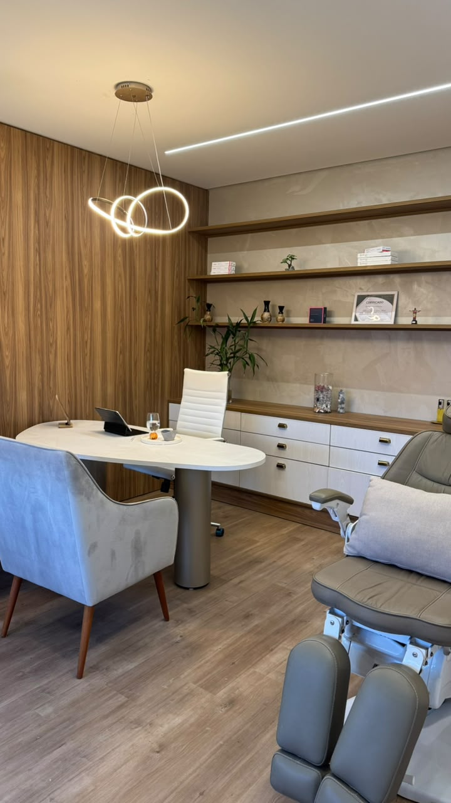
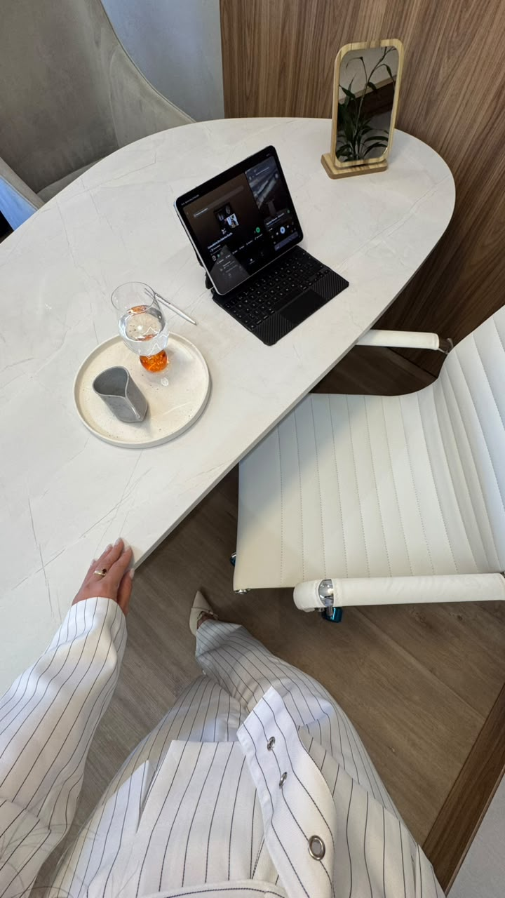
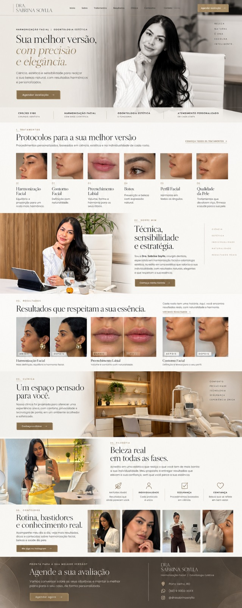

Naturalidade
Valorizar aquilo que é seu.
Harmonização facial · Odontologia estética
Ciência, técnica e sensibilidade para realçar a sua beleza natural, com resultados harmônicos e personalizados.
Agendar avaliação →Descubra nossos cuidados ↓Beleza
natural
é uma
escolha
inteligente.
01. Tratamentos
Procedimentos personalizados, baseados na individualidade de cada rosto.
Registros individuais. Os resultados variam de pessoa para pessoa.
02. Sobre mim
Sou a Dra. Sabrina Soylla. Acredito em uma estética que valoriza a sua individualidade e respeita aquilo que faz você ser você.
Meu trabalho começa com a escuta: entender a sua história, conversar sobre seus objetivos e planejar cada cuidado de forma personalizada.
Conheça minha história →03. Resultados
Cada rosto tem uma história.
Conheça alguns resultados do nosso cuidado.
Filtrar por tratamento
Registros individuais. Os resultados variam de pessoa para pessoa.
Toque em uma foto para ver a comparação completa.
04. Clínica
Um ambiente acolhedor para conversar sobre seus objetivos, com conforto e atenção em cada etapa do seu cuidado.
Conheça a clínica →


05. Filosofia
Acredito em uma estética que realça o que você tem de mais bonito: a sua individualidade. Meu propósito é entregar um cuidado que valorize a sua confiança, sem que você perca a sua essência.
Valorizar aquilo que é seu.
Cada protocolo é único.
Atenção em cada etapa.
Beleza e bem-estar.